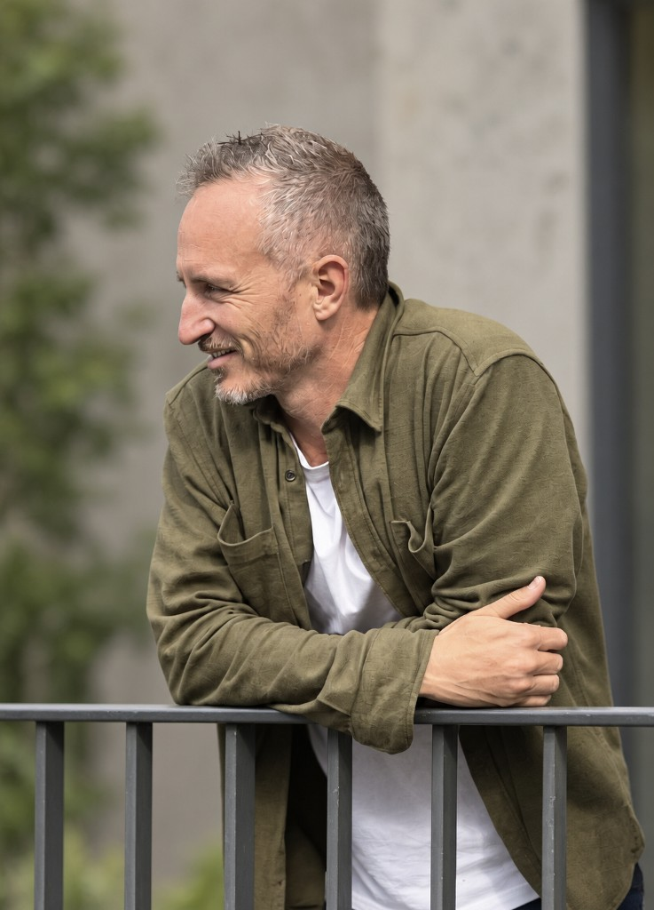

I'm a founder with over 10 years in product and operations across clean energy and transport. I help organisations move faster—whether that's 0→1 ventures, scaling operations, or shipping software.
I built Photonik (solar design software used by 2,000+ installers globally) and Clean Energy Reviews (CER), an independent advice platform for consumer solar and battery decisions. I also helped scale Car Next Door from startup to Uber acquisition, leading product, strategy, and operations. Earlier, I ran Newkirk Solar Services, supporting small retailers with solar operations.
I'm interested in interesting problems and teams—in clean energy, transport, or wherever product and operations can move the needle. If you're building something and want someone who ships—let's talk.